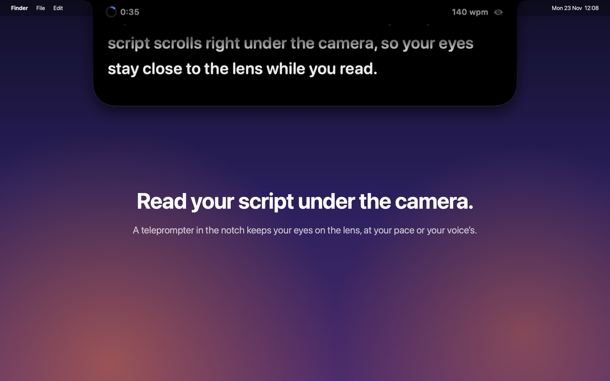

Lintel
Teleprompter & notch island for Mac

Lintel turns the notch on your MacBook into a living island. Rest the pointer on it, or press ⌃⌥Space, and it opens into the things you check all day.
- Teleprompter under the camera: your script scrolls right below the lens, at your pace or following your voice.
- Now Playing, Next Up meetings with one-click Join, and a focus Timer.
- Clipboard history, Notes, a file Shelf, a Launcher and a camera Mirror.
Everything runs on your Mac. No accounts, no analytics, no tracking.